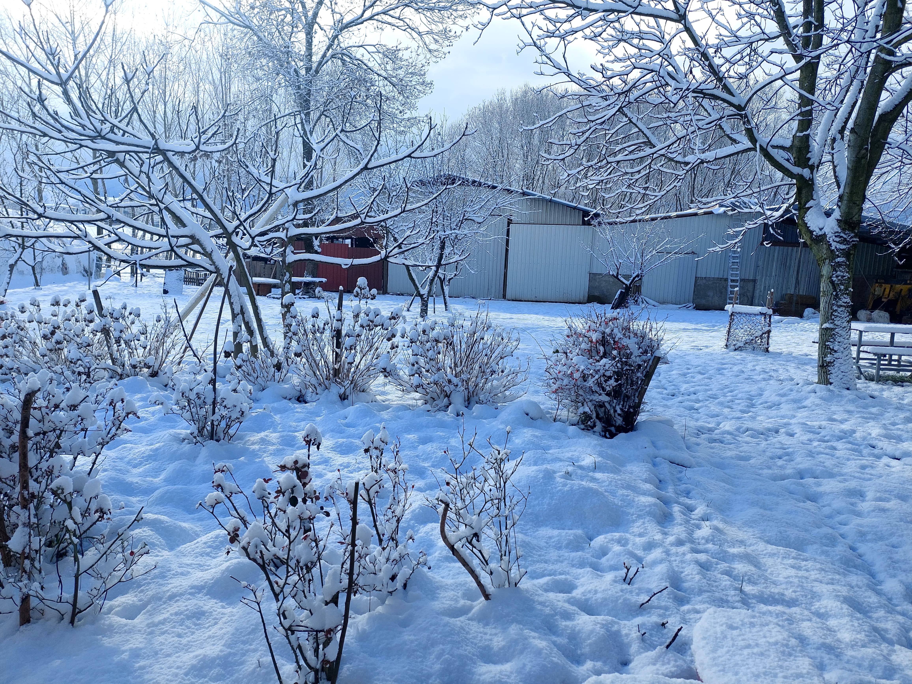
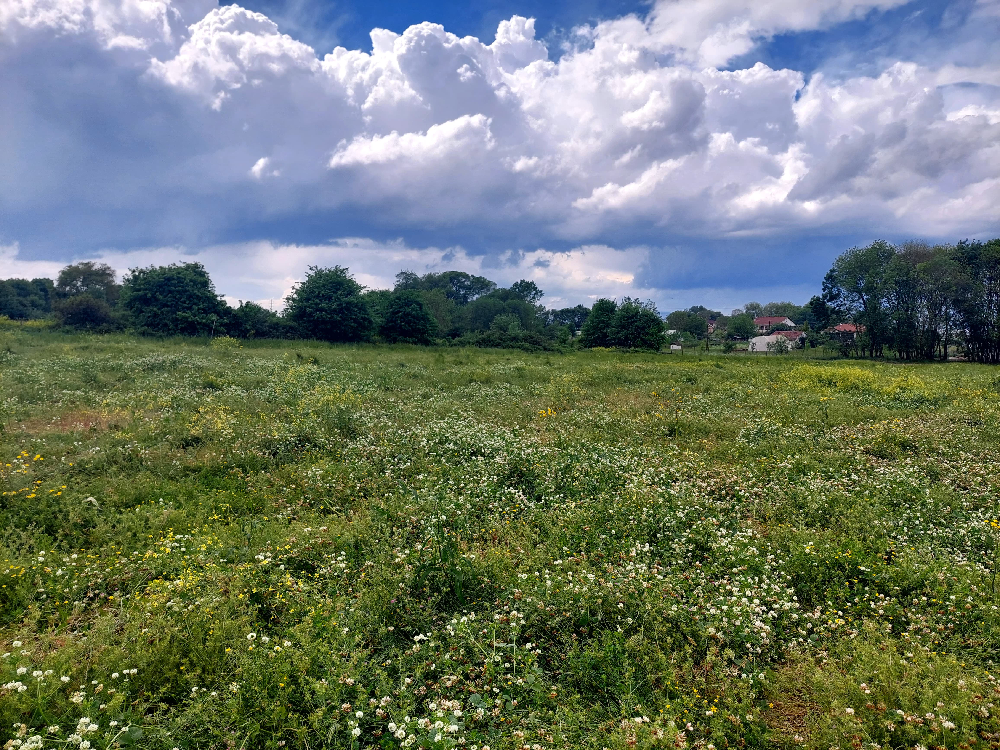
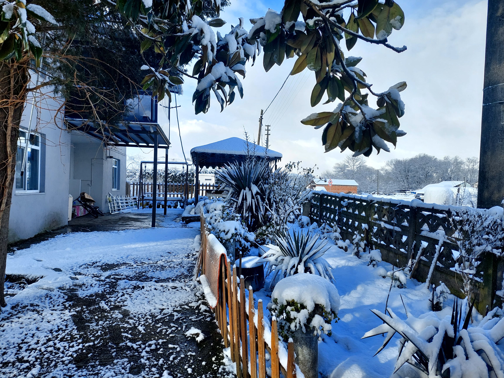
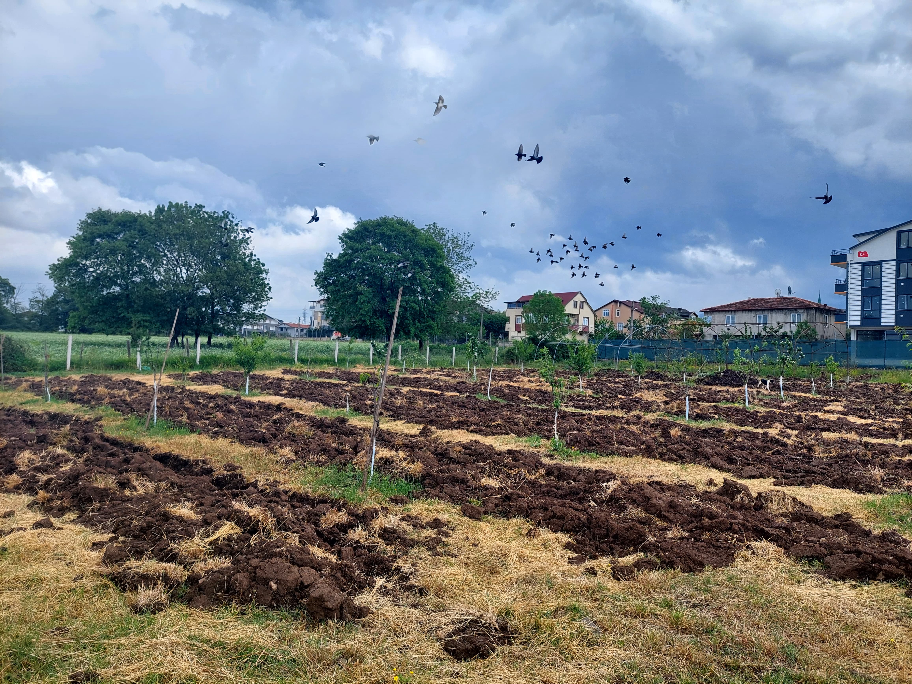
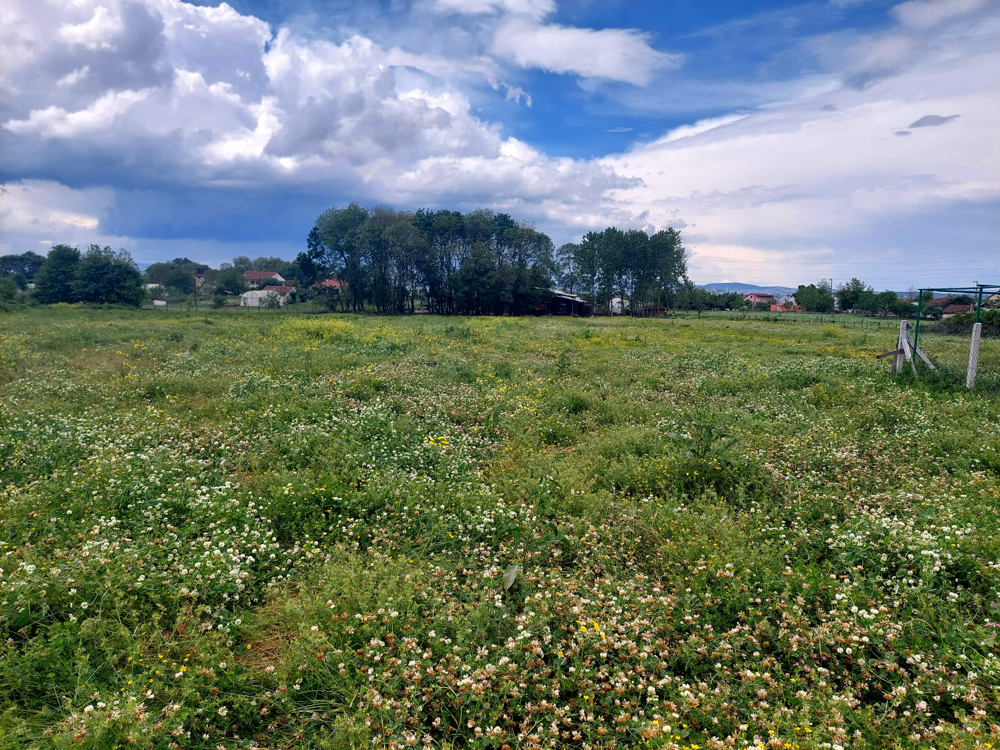
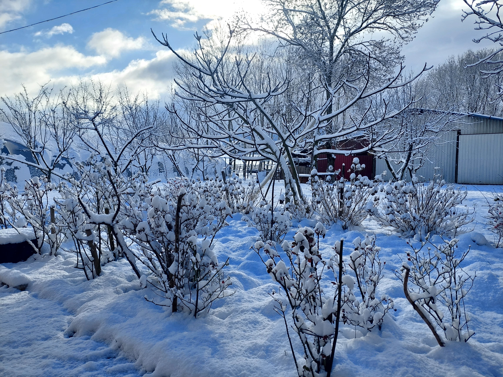
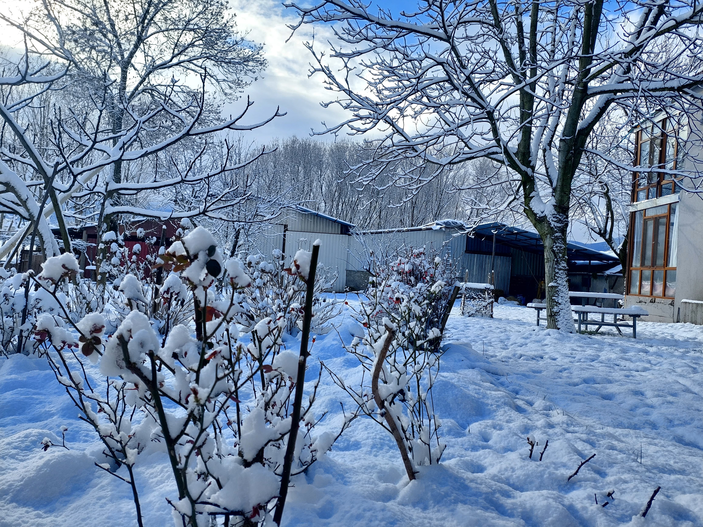
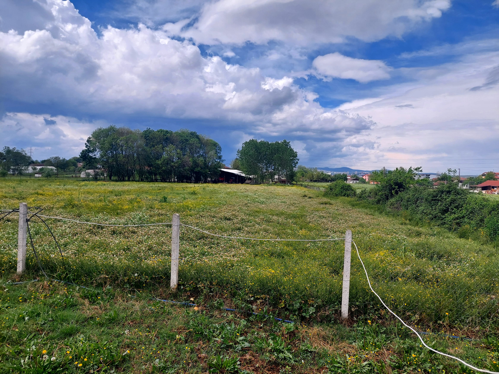

✅
Helal Kesim
İslami usullere uygun kesim
İslami usullere uygun kesim
Hisseleriniz özenle parçalanır
Temiz ve düzenli bir ortam
Çalışanlarımızın hepsi ailemiz ve akrabalarımız
Sabah börek, poğaça; öğlen kavurma, pilav, tatlı







